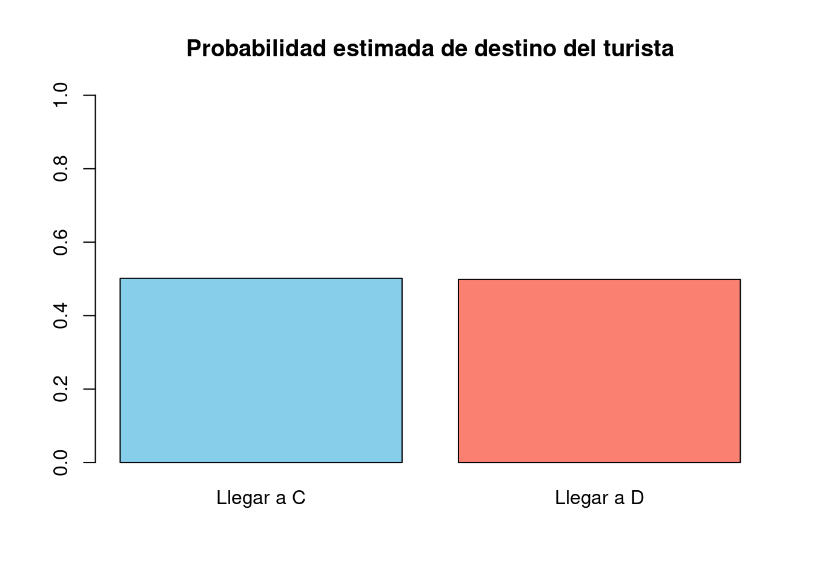
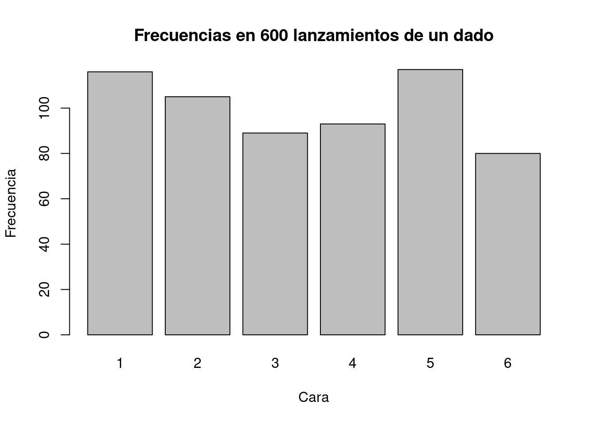
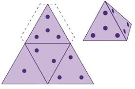

destino <- sample(c("C", "D"), size = 1, replace=TRUE)
destino[1] "D"Círculos Matemáticos son sesiones divertidas y colaborativas de resolución de problemas, dirigidas por tutores expertos, que ayudan a los estudiantes de secundaria a descubrir su pasión por las matemáticas.
Más allá de la clase tradicional, exploran temas avanzados y emocionantes que abren nuevas perspectivas — conoce más en circulodematematicaslt.com.
Agradezco a mi amiga Maria Amelia mariaameliasalazar por su invitación a participar en esta linda e interesante iniciativa.
Estas actividades están inspiradas en la propuesta del libro Azar y probabilidad (Editorial Síntesis), el cual presenta un enfoque didáctico para introducir conceptos fundamentales de probabilidad a partir de situaciones cercanas y manipulativas. Retomando su orientación, se han adaptado experiencias como el uso de bolas numeradas y experimentos aleatorios, con el propósito de favorecer la comprensión de nociones como equiprobabilidad, asignación de valores de probabilidad y comparación de sucesos, promoviendo así un aprendizaje activo y reflexivo en el aula. https://www.sintesis.com/libro/azar-y-probabilidad.
A medida que vayas avanzando en este taller, te agradezco si me compartes tus respuestas en el siguiente link https://forms.gle/3a7nZt8cE6jxJbi96
Esto nos hace pensar que, cuando sacamos una bola, nos encontramos en un experimento aleatorio.
Dicho número expresa la confianza que tenemos en que ocurra el suceso. Así, asignamos a un suceso seguro el valor 1, esto quiere decir que siempre ocurre, y 0 al suceso imposible.
Vacía ahora la bolsa y coloca sólo las bolas 2 y 5. ¿Cuáles son los posibles resultados de tu experimento? Asigna una probabilidad a cada uno de los resultados posibles.
Vacía ahora la bolsa y coloca sólo las bolas 2 y 5. ¿Cuáles son los posibles resultados de tu experimento? Asigna una probabilidad a cada uno de los resultados posibles.
Si quieres que aparezcan las letras exactamente como en la figura y B marcado visualmente, podemos resaltarlo:
C D
\ /
\ /
\ /
\ /
B
|
|
AFigura 2.12
De los trenes que parten de A y pasan por B, la mitad van a C y la otra mitad a D, alternándose de la forma siguiente:
C D C D C D C D C D …
Cada tren lleva escrito su destino en la puerta de los vagones, para que los viajeros no se confundan.
Un día, sin embargo, un turista despistado que quiere ir a D toma el metro en A sin mirar las indicaciones.
¿Cuál de los siguientes sucesos piensas que es más probable?
el turista llegará a C
el turista llegará a D
El momento de la verdad ha llegado…
Esta línea decidirá a dónde termina nuestro turista despistado. Una sola tirada: ¡que la probabilidad esté de su lado!
destino <- sample(c("C", "D"), size = 1, replace=TRUE)
destino[1] "D"Si simularamos las trayectorias de \(100000\) despistados, el siguiente sería el resultado.
# Simulación del problema del turista despistado
set.seed(123) # Para reproducibilidad
# Número de simulaciones (turistas)
n <- 100000
# Trenes alternando: C, D, C, D...
# Representamos C como 1 y D como 0
trenes <- c("C", "D")
# El turista se sube sin mirar
# Elegimos aleatoriamente tren C o D con igual probabilidad
elecciones <- sample(trenes, size = n, replace = TRUE)
# Calculamos frecuencias relativas
prob_C <- mean(elecciones == "C")
prob_D <- mean(elecciones == "D")
# Mostramos resultados
cat("Probabilidad estimada de llegar a C:", prob_C, "\n")Probabilidad estimada de llegar a C: 0.50161 cat("Probabilidad estimada de llegar a D:", prob_D, "\n")Probabilidad estimada de llegar a D: 0.49839 # Visualización
barplot(
height = c(prob_C, prob_D),
names.arg = c("Llegar a C", "Llegar a D"),
col = c("skyblue", "salmon"),
ylim = c(0, 1),
main = "Probabilidad estimada de destino del turista"
)
Interpretación del histograma
Chicos, lo que vemos en este histograma es el resultado de simular 100.000 turistas despistados que se suben al metro sin mirar para dónde va. Recuerden que los trenes se alternan: uno va a C, el siguiente va a D, y así todo el tiempo.
En el gráfico aparecen dos barras:
La barra azul claro representa a los que llegaron a C.
La barra roja representa a los que llegaron a D.
Ambas barras tienen prácticamente la misma altura, lo que significa que la probabilidad de llegar a C o a D es casi exactamente la misma: 50% para cada uno. Esto es porque el sistema de trenes está perfectamente equilibrado: sale uno para C, luego uno para D, y así sucesivamente.
En otras palabras, si eres un turista despistado en esta ciudad, tienes la misma posibilidad de terminar en C que en D. Esto es un ejemplo de una distribución uniforme, donde todos los resultados posibles tienen la misma probabilidad.
Asigna un valor a la probabilidad de que el turista llegue a D. \(P(D) =\)
Calcula la suma siguiente: \(P(C) + P(D) =\)
\[ E = \{C, D\} \]
Pregunta: ¿Cuántos elementos tiene este conjunto?
\[ E = \]
Pregunta: ¿Cuántos elementos tiene E?
Si lanzas un dado 600 veces, ¿cuántas veces esperas obtener un 3?
Asigna un número a las siguientes probabilidades:
\[ P(1) = \quad\quad P(5) = \quad\quad P(2) = \]
Pregunta: ¿Cuál será el valor de la suma?
\[ P(1) + P(2) + P(3) + P(4) + P(5) + P(6) = \]
Como el espacio muestral es un conjunto, podemos formar subconjuntos suyos. Así, al lanzar un dado, obtenemos el siguiente espacio muestral:
\[ E = \{1, 2, 3, 4, 5, 6\} \]
Podemos formar subconjuntos suyos, por ejemplo:
\[ A = \text{«obtener par»} = \{2, 4, 6\} \]
Escribe los elementos de los siguientes subconjuntos de E:
\[ B = \text{«número impar»} = \{\ \} \]
\[ C = \text{«número primo»} = \{\ \} \]
\[ D = \text{«número compuesto»} = \{\ \} \]
\[ F = \text{«múltiplo de 3»} = \{\ \} \] Asigna probabilidades a cada uno de los sucesos B, C, D, E, F:
\[ P(B) = \quad\quad P(C) = \quad\quad P(D) = \quad\quad P(F) = \]
\[ P(A) = \frac{\text{n.º de elementos de A}}{\text{n.º de elementos de E}} = ? \]
Pregunta: ¿Existe alguna relación entre ellas?
\[ P(F) = \frac{\text{n.º de elementos de F}}{\text{n.º de elementos de E}} = ? \]
Pregunta: ¿Existe alguna relación entre ellas?
# Espacio muestral de un dado perfecto
E_dado <- 1:6
length_E_dado <- length(E_dado)
cat("Dado cúbico:\n")Dado cúbico:cat(" E =", paste0("{", paste(E_dado, collapse = ", "), "}"),
" | |E| =", length_E_dado, "\n") E = {1, 2, 3, 4, 5, 6} | |E| = 6 # (9) Simulación de 600 lanzamientos y conteo de '3'
n_lanz <- 600
lanzamientos <- sample(E_dado, size = n_lanz, replace = TRUE)
veces_3 <- sum(lanzamientos == 3)
cat(" En", n_lanz, "lanzamientos, veces que sale 3 =", veces_3, "\n") En 600 lanzamientos, veces que sale 3 = 89 # Probabilidades teóricas simples
P1 <- 1/6; P2 <- 1/6; P5 <- 1/6
suma_P <- P1 + (1/6) + (1/6) + (1/6) + P5 + (1/6) # P(1..6)
cat(" P(1)=", P1, " P(2)=", P2, " P(5)=", P5, " | suma P(1..6) =", suma_P, "\n\n") P(1)= 0.1666667 P(2)= 0.1666667 P(5)= 0.1666667 | suma P(1..6) = 1 ## -----------------------------------------------
## (10) Subconjuntos del espacio muestral del dado
## -----------------------------------------------
A <- c(2, 4, 6) # obtener par (dado)
B <- setdiff(E_dado, A) # número impar
C_ <- c(2, 3, 5) # números primos en {1..6}
D_ <- setdiff(E_dado, c(1, 2, 3, 5)) # compuestos en {1..6} -> {4,6}
F <- c(3, 6) # múltiplos de 3
cat("Subconjuntos:\n")Subconjuntos:cat(" A (par) =", paste(A, collapse = ", "), "\n") A (par) = 2, 4, 6 cat(" B (impar) =", paste(B, collapse = ", "), "\n") B (impar) = 1, 3, 5 cat(" C (primo) =", paste(C_, collapse = ", "), "\n") C (primo) = 2, 3, 5 cat(" D (compuesto) =", paste(D_, collapse = ", "), "\n") D (compuesto) = 4, 6 cat(" F (múltiplo 3) =", paste(F, collapse = ", "), "\n\n") F (múltiplo 3) = 3, 6 ## Probabilidades teóricas de estos sucesos con dado perfecto
P_A <- length(A)/length_E_dado
P_B <- length(B)/length_E_dado
P_C <- length(C_)/length_E_dado
P_D <- length(D_)/length_E_dado
P_F <- length(F)/length_E_dado
cat("Probabilidades teóricas (dado perfecto):\n")Probabilidades teóricas (dado perfecto):cat(" P(A)=", P_A, " P(B)=", P_B, " P(C)=", P_C, " P(D)=", P_D, " P(F)=", P_F, "\n\n") P(A)= 0.5 P(B)= 0.5 P(C)= 0.5 P(D)= 0.3333333 P(F)= 0.3333333 ## -----------------------------------------------
## Gráfica opcional: frecuencias de los 600 lanzamientos
## -----------------------------------------------
#Descomenta para ver la barra (en RStudio/plots)
barplot(table(factor(lanzamientos, levels = 1:6)),
main = "Frecuencias en 600 lanzamientos de un dado",
xlab = "Cara", ylab = "Frecuencia")
Al lanzarlo puede caer sobre una cualquiera de sus seis caras; por ello, si está perfectamente construido, asignamos la probabilidad \(\frac{1}{6}\) al suceso:
«Obtener un 1» (la misma para cualquier cara).
Te sugerimos que construyas un dado de cartón, cuyas caras sean triángulos equiláteros iguales (Fig. 2.13).

a) Si haces el experimento de lanzar al aire este dado, ¿cuál es el espacio muestral, o conjunto de todos los resultados elementales posibles?
b) Si estuviera perfectamente construido, asigna probabilidades a cada uno de los siguientes sucesos:
c) Si pegas un botón sobre la cara 2, ¿crees que sería correcto asignar las mismas probabilidades a los sucesos anteriores?
a) Si haces el experimento de lanzar al aire este dado dodecaédrico, ¿cuál es el espacio muestral?
b) Considera los siguientes sucesos que pueden ocurrir cuando se realiza el experimento de lanzar el dado de doce caras:
Si estuviera perfectamente construido, asigna probabilidades a cada uno de estos sucesos:
\[ P(A) = \quad ; \quad P(B) = \quad ; \quad P(C) = \quad ; \quad P(D) = \quad ; \quad P(E) = \quad ; \quad P(F) = \]
c) Si pegas un botón en una de las caras, ¿crees que sería correcto asignar las mismas probabilidades a esos sucesos?